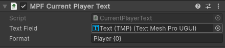
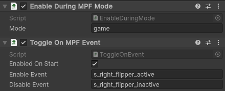

Note
The VPE media controller is very basic compared to the fully featured Kivvy and Godot based media controllers by the MPF developers.
Media Controller
MPF is designed with real pinball machines in mind and those typically have a specialized circuit board for controlling the playfield hardware. To allow MPF to control your virtual playfield, VPE connects to MPF as if it was a stupid little circuit board that can do nothing but turn coils and lights on and off. As a result, MPF only gives simple orders to VPE without providing any information about the larger context within the current game, like what modes are active, how many players there are, or even what the score is. To get this information, VPE connects to MPF through a separate channel designed for controlling the displays and speakers in the backbox.
Text
To display variables from MPF (such as the current player's score) in a text field, you can use one of the following components:
- MPF Current Player Text shows the number of the player whose turn it is.
- MPF Player Count Text shows the number of players in the current game.
- MPF Machine Variable Text and MPF Player Variable Text show machine
and player variables, respectively. For technical reasons, they each have
three variants:
- String for text variables including symbols other than numeric digits
- Int for whole numbers
- Float for decimal numbers
You can find these components under Pinball -> MPF Media Controller in the Add Component menu. Each component needs a text field to show the text. To create one, right-click in your hierarchy and select UI -> Text - Text Mesh Pro. If prompted, import the TMP Essential Resources, then drag the game object of the newly created text field into the Text Field box on the MPF text component. To learn about positioning and styling text fields and other UI elements, refer to the Unity documentation.
Formatting
By default, the text field will display the variable as it was received from
MPF, but you can optionally specify a format string to customize how the value
from MPF is converted to text. The most basic way to use this feature is to add
additional text before or after the variable. For example, enter P{0} into the
Format field of an MPF Current Player Text component to prefix the player
number with the letter 'P.' Using more advanced format string features, it is
possible to separate every third digit of the score number with a comma or round
to a certan number of decimal places. You could learn how to do that and much
more in
Microsoft's introduction to string formatting in .NET.
Or you could take the easy route and just ask some LLM to write your format
strings for you.
Sound
To play a sound effect when the player unlocks an achievement or to add a soundtrack for a specific mode, use the MPF Event Sound and MPF Mode Sound components. Each one allows you to specify the name of an event or mode from MPF and a sound it should trigger. MPF Mode Sound has additional options for stopping the sound that are useful for music.
Toggling Objects
VPE's media controller can enable and disable game objects in the Unity scene whenever events occur or modes are triggered in MPF. While it is a far cry from what is possible with MPF's new Godot based media controller, this feature allows you to at least show and hide some graphics or videos when things happen in MPF without having to split your table across two game engines.
The Enable During MPF Mode component enables its parent object during the specified MPF mode and disables it otherwise. The Toggle On MPF Event component enables its parent object when the Enable Event occurs and disables it when the Disable Event occurs. You do not have to specify both. If both are set to the same event, that event will enable the object if it is disabled and enable it when it is disabled. The MPF documentation contains a list of all events built into MPF. In addition, you can define your own.
Lastly, make sure the objects you add these components to are intially enabled. They cannot begin receiving events until their parent object is enabled. If the object should be disabled initially, do not just disable it in the scene. For objects controlled by a Toggle On MPF Event component, use its Enabled On Start checkbox. Objects with an Enable During MPF Mode component will always be disabled on startup, at least until MPF starts the first mode.